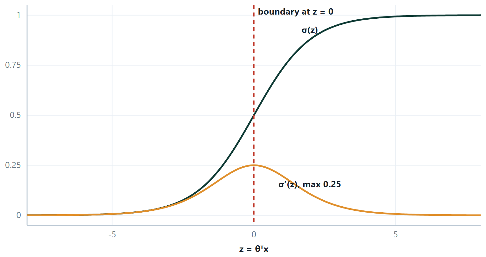
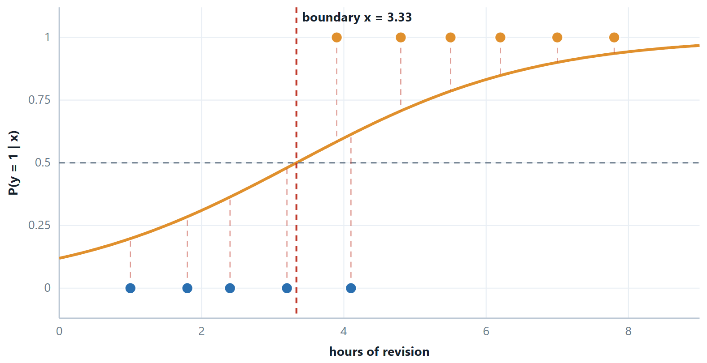
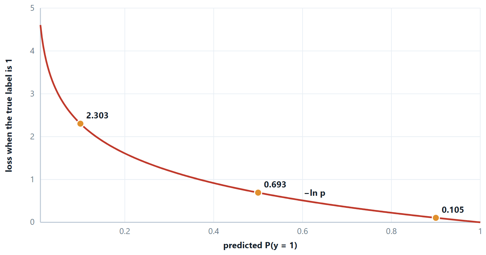
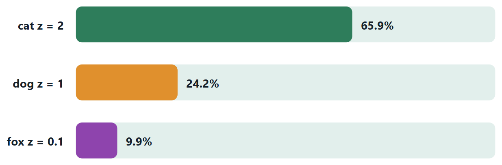
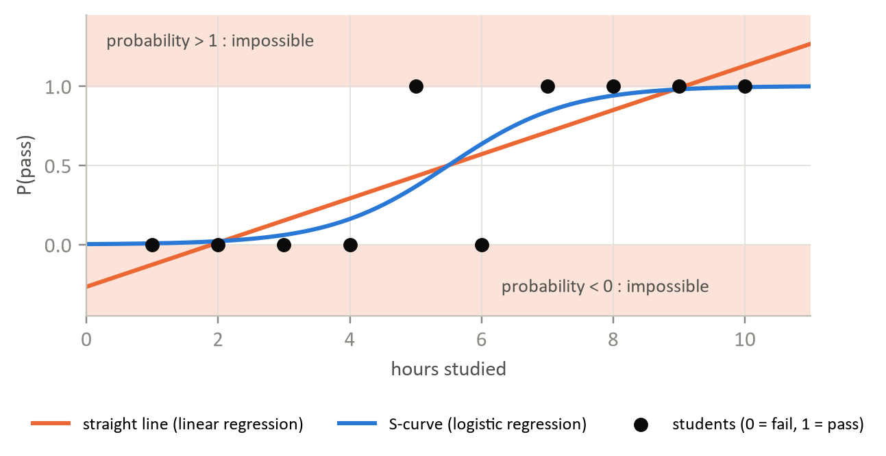

Chapter 8: Logistic Regression and Multi-class Classification¶
Naive Bayes counts; logistic regression fits. It keeps the straight-line score of linear regression and bends only the output, into a number between 0 and 1 that can be read as a probability. This chapter builds the model from the sigmoid and the log-loss, shows how gradient descent trains it, and then extends it from two classes to many, through the one-vs-rest and one-vs-one wrappers and through softmax regression.
8.1 Logistic regression¶
Why not just fit a straight line to a target that is 0 or 1? Because the line does not stop: it predicts 1.4 for a large \(x\) and −0.3 for a small one, and neither is a probability. Worse, a single far-away point drags the line and moves the boundary even though it was already being classified correctly.
The fix is to pass the linear score through a squashing function that maps the whole real line into (0, 1). The linear part stays exactly as it was; only the output is bent into shape.
the sigmoid, or logistic, function — the output is read as \(P(y = 1 \mid x)\)


Definition: Log-loss (binary cross-entropy)
\(J(\theta ) =\) −(1/m) \(\sum\) [ \(y\) log \(h(x) + (1 - y) \log(1 - h(x))\) ]
Only one term is ever active: for \(y = 1\) the cost is −log \(h\), and for \(y = 0\) it is −log(1 \(- h\)).

Two reasons this cost and not squared error. It is convex in \(\theta\) — squared error on top of a sigmoid is not, and gradient descent can get trapped in a local minimum. And its gradient is remarkably clean:
identical in form to linear regression — only \(h\) has changed
Odds and log-odds
Rearranging the sigmoid gives log[p/(1−p)] \(= \theta ^{T}x\). So logistic regression is a linear model of the log-odds, and a coefficient \(\theta _{j}\) means: a one-unit rise in \(x_{j}\) multiplies the odds by \(e^{\theta j}\). That is how the coefficients are reported in medicine and economics, where they are called odds ratios, and it is why the model remains popular despite being the simplest thing in this unit.
# logistic regression, with the two outputs that matter kept apart
from sklearn.linear_model import LogisticRegression
from sklearn.pipeline import make_pipeline
from sklearn.preprocessing import StandardScaler
import numpy as np
clf = make_pipeline(StandardScaler(),
LogisticRegression(C=1.0, max_iter=1000)).fit(X_tr, y_tr)
proba = clf.predict_proba(X_te)[:, 1] # the score
pred = (proba >= 0.5).astype(int) # the decision — a separate choice
# the coefficients are log-odds; exponentiate them to get odds ratios
w = clf[-1].coef_[0]
print(np.exp(w).round(3)) # "one sd more of this multiplies the odds by..."
Two details worth knowing. sklearn's C is the inverse of \(\lambda\), so a small \(C\) means strong regularisation — the opposite of the convention in Unit 3. And logistic regression is regularised by default, which is why the scaler is not optional here.
For more than two classes the same model is widened rather than replaced — the next section but one does that properly, and it turns out to need no new ideas at all.
Example 8.1: Deriving \(\sigma '(z)\) and the logistic gradient
Problem. Two results carry the whole of logistic regression and half of back-propagation: \(\sigma '(z) = \sigma (z)(1 - \sigma (z))\), and \(\partial J/\partial \theta _{j} = (1/m)\sum (h(x_{i}) - y_{i})x_{\text{ij}}\). Both are short.
Step 1 — differentiate the sigmoid
\(\sigma (z) = (1 + e^{-z})^{-1}\). By the chain rule, with the outer derivative of \(u^{-1}\) being \(-u^{-2}\) and the inner derivative of \(e^{-z}\) being \(-e^{-z}\):
\(\sigma '(z) =\) −(1 \(+ e^{-z})^{-2} \cdot (-e^{-z}) = e^{-z} / (1 + e^{-z})^{2}\)
Step 2 — recognise the two factors
Split the fraction deliberately:
\(\sigma '(z) = [1/(1 + e^{-z})] \cdot [e^{-z}/(1 + e^{-z})]\)
The first bracket is \(\sigma (z)\). For the second, add and subtract 1 in the numerator: \(e^{-z} = (1 + e^{-z}) - 1\), so the bracket is \(1 - 1/(1 + e^{-z}) = 1 - \sigma (z)\).
\(\sigma '(z) = \sigma (z)(1 - \sigma (z))\) — the derivative expressed entirely in terms of the output, which is why an implementation never needs to keep \(z\).
Step 3 — differentiate the log-loss
For one example, \(L =\) −[y ln \(h + (1 - y) \ln(1 - h)\)] with \(h = \sigma (z)\) and \(z = \theta ^{T}x\). Differentiate with respect to \(h\) first:
\(\partial L/\partial h =\) −y/h \(+ (1 - y)/(1 - h) = (h - y) / [h(1 - h)]\)
(put the two fractions over the common denominator \(h(1 - h)\) and the numerator collapses to \(h - y\)).
Step 4 — chain it through
\(\partial L/\partial \theta _{j} = (\partial L/\partial h)(\partial h/\partial z)(\partial z/\partial \theta _{j})\), and the three factors are
\((h - y)/[h(1 - h)] \times h(1 - h) \times x_{j}\)
The middle factor — which is \(\sigma '\) from step 2 — cancels the denominator exactly. That cancellation is not luck: log-loss is the loss for which it happens, which is one reason it is the loss we use.
Answer. \(\sigma '(z) = \sigma (z)(1 - \sigma (z))\) and \(\partial J/\partial \theta _{j} = (1/m) \sum (h(x_{i}) - y_{i}) x_{\text{ij}}\)
Comment. Compare the second result with the linear-regression gradient in Unit 3: identical in form, with \(h\) changed from \(\theta ^{T}x\) to \(\sigma (\theta ^{T}x)\). One optimiser serves both. And \(\sigma '\) has a maximum of 0.25 at \(z = 0\) — the number that later explains why deep sigmoid networks stop learning.
8.2 More than two classes¶
Everything so far has answered yes or no. Most real problems do not: a digit is one of ten, an iris one of three, a support ticket one of forty. There are two honest ways to get there. Either build several two-class models and combine their answers, which needs no new mathematics at all, or widen the model so it produces one score per class and turn those scores into probabilities in one step. The second is softmax, and it is not a new algorithm — it is logistic regression with more than two outputs.
Combining binary classifiers¶
| One-vs-rest (OvR) | One-vs-one (OvO) |
|---|---|
| Train \(c\) classifiers: class \(k\) against everything else. | Train c(c−1)/2 classifiers, one per pair. |
| Predict the class whose classifier scores highest. | Every classifier votes; the class with most votes wins. |
| \(c\) fits, each on the whole dataset. | Many more fits, but each sees only two classes' worth of data. |
| Every sub-problem is imbalanced by construction — one class against c−1. | Cheaper overall when training cost grows faster than linearly with \(m\) — which is why SVC uses it. |
| The \(c\) scores come from separate models, so comparing them is not entirely principled. | Each sub-problem is balanced and usually easier. |
| sklearn default for LogisticRegression(multi_class=“ovr”), Perceptron, SGDClassifier. | 10 classes \(\to 45\) classifiers, so prediction is slower. |
Softmax regression¶
The direct route. Keep one weight vector per class, so the model produces \(c\) scores \(z_{k} = \theta _{k}^{T}x\), and convert them into probabilities that are positive and sum to one.
the softmax function; \(z_{k} = \theta _{k}^{T}x\) is the score for class \(k\)
Why exponentiate rather than simply divide each score by the total? Because scores can be negative, and a negative probability is not one. The exponential sends every real number to a positive one first, so the ratios are always valid. It also makes the answer depend only on the differences between the scores, which is what the figure below is built to show.

Definition: Categorical cross-entropy
With the target written as a one-hot vector y (a 1 at the true class, zeros elsewhere),
\(L = - \sum _{k} y_{k}\) ln \(p_{k} = -\) ln \(p_{\text{true}}\)
Every term but one is multiplied by zero, so the sum collapses to a single logarithm: the cost is how surprised the model was by the right answer.
Example 8.2: Deriving the softmax gradient, and why binary logistic regression is a special case
Problem. Two claims: \(\partial L/\partial z_{k} = p_{k} - y_{k}\), the same (prediction \(-\) truth) shape as everywhere else in this course; and softmax with \(c = 2\) is the sigmoid.
Step 1 — differentiate the softmax itself
Write \(S = \sum _{j} e^{z_{j}}\), so \(p_{i} = e^{z_{i}}/S\). Differentiating with the quotient rule gives two cases, because \(z_{k}\) appears in the numerator only when \(i = k\), but in the denominator always:
\(\partial p_{i}/\partial z_{k} = p_{i}(1 - p_{i})\) if \(i = k\), and \(-p_{i}p_{k}\) otherwise.
Both cases are \(p_{i}(\delta _{\text{ik}} - p_{k})\), where \(\delta\) is 1 when the indices match and 0 when they do not.
Step 2 — chain it through the loss
\(L = -\sum _{i} y_{i}\) ln \(p_{i}\), so \(\partial L/\partial p_{i} = -y_{i}/p_{i}\), and
\(\partial L/\partial z_{k} = \sum _{i} (-y_{i}/p_{i}) \cdot p_{i}(\delta _{\text{ik}} - p_{k}) = -\sum _{i} y_{i}(\delta _{\text{ik}} - p_{k})\)
The \(p_{i}\) cancels — the same cancellation that made binary log-loss so clean.
Step 3 — collapse the sum
Split it: \(-\sum _{i} y_{i}\delta _{\text{ik}} + p_{k} \sum _{i} y_{i}\). The first sum picks out \(y_{k}\); the second is 1, because a one-hot vector sums to one. So
\(\partial L/\partial z_{k} = p_{k} - y_{k}\), and by the chain rule \(\partial L/\partial \theta _{k} = (p_{k} - y_{k})x\).
Step 4 — put \(c = 2\)
\(p_{1} = e^{z_{1}}/(e^{z_{1}} + e^{z_{2}})\). Divide numerator and denominator by \(e^{z_{1}}\):
\(p_{1} = 1/(1 + e^{-(z_{1} - z_{2})}) = \sigma (z_{1} - z_{2})\)
Two-class softmax is the sigmoid applied to the difference of the two scores. It also shows the model is over-parameterised — only \(z_{1} - z_{2}\) matters, so one of the two weight vectors is redundant, which is exactly why the binary model keeps just one.
Answer. \(\partial L/\partial z_{k} = p_{k} - y_{k}\); and softmax with two classes is \(\sigma (z_{1} - z_{2})\)
Comment. Line up the three gradients from this course: \((h - y)x\) for linear regression, \((h - y)x\) for logistic regression, and \((p - y)x\) here. One optimiser, three models. That is not a coincidence — it is what happens when each loss is chosen to match its output distribution.
8.3 Further topics¶
A straight line and an S-curve on the same data¶
The opening argument of this chapter is easy to state and easier to believe when it is drawn. In the figure, ten students are plotted as 0 (failed) or 1 (passed) against hours studied. The least-squares straight line is forced to leave the interval from 0 to 1 at both ends, and since a "probability" of 1.3 or \(-0.2\) means nothing, the line can only be used by chopping its ends off by hand. The S-curve flattens at 0 and at 1 by construction, and passes through 0.5 where the data change from mostly failing to mostly passing.

Maximum likelihood: why log-loss is the natural cost¶
The log-loss was introduced as a cost with pleasant properties, but it can be derived rather than chosen. Suppose the model assigns the probability \(p_i = h_\theta(x^{(i)})\) to class 1 for example \(i\). The probability it gives to the label actually observed is \(p_i\) when \(y^{(i)} = 1\) and \(1 - p_i\) when \(y^{(i)} = 0\), which can be written in one expression as \(p_i^{\,y^{(i)}}(1 - p_i)^{1 - y^{(i)}}\). If the examples are independent, the probability that the model assigns to the whole set of observed labels is the product, the likelihood:
Maximum likelihood estimation chooses the \(\theta\) that makes the data most probable under the model. A product of many numbers below 1 is awkward to work with and underflows on a computer, so we maximise its logarithm instead, which has the same maximiser because the logarithm is increasing. Negating turns the maximisation into a minimisation:
So the log-loss cost \(J(\theta)\) is the negative log-likelihood divided by \(m\). Minimising log-loss and maximising likelihood are one and the same, which is the deepest reason for using it. Squared error has no such justification here: it is the negative log-likelihood of a model with Gaussian errors, which is the wrong noise model for a 0/1 label. There is no closed-form solution for the maximising \(\theta\), which is why logistic regression is trained iteratively, by gradient descent or by a quasi-Newton method such as L-BFGS.
Regularised logistic regression¶
Logistic regression overfits in the same way that linear regression does, and for data that can be separated perfectly it does so in an extreme manner. If a straight line splits the two classes with no error, the likelihood can always be increased by making the S-curve steeper, so the best weights are infinitely large: gradient descent never stops growing them. (On the four-point data of the gradient descent example, \(\theta_1\) has already grown from 0.31 after two iterations to about 4.0 after two thousand and is still rising.) The cure is the one from Unit 3, a penalty on the size of the weights:
The sum starts at \(j = 1\): the intercept is not penalised. The gradient of the ridge cost changes only slightly, each weight gaining an extra term \(\frac{\lambda}{m}\theta_j\) that pulls it towards zero at every step. As \(\lambda \to 0\) the plain model returns, with low bias and high variance. As \(\lambda \to \infty\) every weight is squeezed to zero and the model predicts the same probability, the overall class fraction, for everybody: high bias and under-fitting. The lasso penalty can set weights exactly to zero, so it also performs feature selection.
Scikit-learn exposes this through the inverse parameter \(C = 1/\lambda\). On the four-point data (hours 1, 2, 4, 5 with results 0, 0, 1, 1), an L2-regularised fit gives:
| \(C\) | \(\theta_1\) | \(P(\text{pass})\) at 1 h | \(P(\text{pass})\) at 5 h |
|---|---|---|---|
| 100 | 3.945 | 0.0004 | 0.9996 |
| 1 | 1.007 | 0.118 | 0.882 |
| 0.1 | 0.241 | 0.382 | 0.618 |
| 0.01 | 0.029 | 0.485 | 0.515 |
In every row the boundary is at 3 hours, because the data are symmetric about it, so regularisation does not move the boundary here at all. What it changes is the confidence: a strongly regularised model hedges, which is exactly what one should want from a model fitted to four students. Choose \(\lambda\) (or \(C\)) by cross-validation, as for any other hyper-parameter.
Curved boundaries from a linear model¶
The decision boundary of logistic regression is always the hyperplane \(\theta^T x = 0\), so on the raw features it cannot separate a ring of one class from the points inside. The remedy is to add features, not to change the model: the model is linear in the parameters, and nothing requires the features to be the raw measurements. Take the features \((1,\ x_1,\ x_2,\ x_1^2,\ x_2^2)\) and the weights \(\theta = (4, 0, 0, -1, -1)\). Then
and the boundary \(z = 0\) is the circle \(x_1^2 + x_2^2 = 4\) of radius 2. The point \((1, 1)\) has \(z = 2\) and \(p = 0.881\), inside, class 1; the point \((2, 2)\) has \(z = -4\) and \(p = 0.018\), outside, class 0. The boundary is a line in the five-dimensional feature space and a circle in the original plane. Products such as \(x_1 x_2\) tilt the ellipse. This is the idea that the support vector machine, later in this unit, automates with kernels, so that one does not have to write the extra features out.
8.4 Worked examples¶
The examples below work through the calculations of this chapter in full. Try each one on paper before reading the steps.
Example 8.3: Logistic regression, end to end on one example
Problem. A model has \(w = (0.8, -1.2)\) and \(b = 0.5\). Classify \(x = (2, 1)\), compute the log-loss if the true label is 1, and then give one gradient-descent update for \(w_{1}\) with \(\alpha = 0.1\).
Step 1 — the linear score
\(z = 0.8(2) +\) (−1.2)(1) \(+ 0.5 = 1.6 - 1.2 + 0.5 = 0.9\)
Step 2 — the probability
\(\sigma (0.9) = 1/(1 + e^{-0.9}) = 1/(1 + 0.4066) = 0.7109\)
\(0.711 \ge 0.5\), so predict class 1. Note that this follows from \(z \ge 0\) alone; the sigmoid was only needed for the probability.
Step 3 — the loss
\(y = 1\), so \(L =\) −ln(0.7109) \(= 0.3413\). For comparison, a hedged prediction of 0.5 would have cost 0.693, so being right and reasonably confident has halved the penalty.
Step 4 — the update
\(\partial L/\partial w_{1} = (h - y)x_{1} = (0.7109 - 1)(2) =\) (−0.2891)(2) \(= -0.5782\)
\(w_{1}\) := \(0.8 - 0.1(-0.5782) = 0.8 + 0.0578 = 0.8578\)
The weight increased, because the model was under-confident about a positive example with a positive \(x_{1}\). The next prediction for this example will be a little higher.
Answer. \(z = 0.9, p = 0.711\), predict 1, loss \(0.341, w_{1} \to 0.858\)
Example 8.4: Reading a fitted model: probability, boundary, odds and a target probability
Problem. A college has fitted \(z = -4 + 0.8h\), where \(h\) is the number of hours a student studied, and passes a student when \(P(\text{pass}) = \sigma(z) \ge 0.5\). (a) Find the probability of passing for \(h = 6\) and for \(h = 3\). (b) Where is the decision boundary? (c) By what factor does each extra hour multiply the odds of passing? (d) How many hours give a 90% chance of passing?
Step 1 — score and squash (part a)
For \(h = 6\): \(z = -4 + 0.8(6) = -4 + 4.8 = 0.8\), and \(e^{-0.8} = 0.4493\), so
For \(h = 3\): \(z = -4 + 2.4 = -1.6\), \(e^{1.6} = 4.9530\), so \(p = 1/(1 + 4.9530) = 0.168\). Six hours predicts a pass at 69%; three hours predicts a fail with only a 17% chance of passing.
Step 2 — the boundary (part b)
\(\sigma(z) \ge 0.5\) exactly when \(z \ge 0\), so the boundary is \(-4 + 0.8h = 0\), that is \(h = 5\) hours. The sigmoid is not needed to find it.
Step 3 — odds (part c)
Because \(\ln\frac{p}{1-p} = z\), the odds are \(e^{z}\), and one more hour adds \(0.8\) to \(z\):
Check against Step 1: at \(h = 5\) the odds are \(e^{0} = 1\) (even money), and at \(h = 6\) they are \(0.690/0.310 = 2.23\).
Step 4 — run the model backwards (part d)
A probability of 0.9 means odds of \(0.9/0.1 = 9\), so \(z = \ln 9 = 2.1972\). Then
Answer. \(p(6) = 0.690\) (pass), \(p(3) = 0.168\) (fail); boundary at 5 hours; each hour multiplies the odds by 2.23; about 7.75 hours for a 90% chance.
Comment. The effect on the odds is constant, the effect on the probability is not. From 5 to 6 hours the probability rises by 0.19 (0.50 to 0.69); from 7 to 8 hours it rises by only 0.085 (0.832 to 0.917). The log-odds is the scale on which the model is linear.
Example 8.5: Log-loss on four predictions, and the likelihood behind it
Problem. A spam filter gives these probabilities of "spam" to four e-mails.
| True label \(y\) | Predicted \(p\) | |
|---|---|---|
| E1 | 1 (spam) | 0.9 |
| E2 | 1 (spam) | 0.7 |
| E3 | 0 (not spam) | 0.2 |
| E4 | 0 (not spam) | 0.6 |
Compute the loss of each e-mail and the average loss, say which e-mail hurts most, and relate the total to the likelihood of the four labels.
Step 1 — the probability given to the truth
Log-loss is \(-\ln\) of the probability the model assigned to the correct answer: \(p\) when \(y = 1\), and \(1 - p\) when \(y = 0\).
| Probability given to the truth | Loss \(= -\ln(\cdot)\) | |
|---|---|---|
| E1 | \(0.9\) | \(0.1054\) |
| E2 | \(0.7\) | \(0.3567\) |
| E3 | \(1 - 0.2 = 0.8\) | \(0.2231\) |
| E4 | \(1 - 0.6 = 0.4\) | \(0.9163\) |
Step 2 — total and average
\(0.1054 + 0.3567 + 0.2231 + 0.9163 = 1.6015\), so the average loss is \(1.6015/4 = 0.4004\).
Step 3 — the worst offender
E4 contributes \(0.9163/1.6015 = 57\%\) of the total although it is one e-mail in four. It is a genuine message that the model leaned towards calling spam, so the truth received only 0.4.
Step 4 — the link with likelihood
The probability that the model assigned to all four observed labels together is the product
which is exactly the total loss. Minimising the sum of log-losses and maximising the likelihood are the same act, because \(-\ln\) turns a product into a sum.
Answer. Losses \(0.1054,\ 0.3567,\ 0.2231,\ 0.9163\); average \(0.4004\); E4 hurts most; \(L = 0.2016\) and \(-\ln L = 1.6015\).
Comment. Loss is lopsided on purpose. A prediction of 0.4 for the truth costs 0.92, but 0.01 would cost \(-\ln 0.01 = 4.61\), five times as much. The model is charged for being loudly wrong, not merely for being wrong.
Example 8.6: Two iterations of batch gradient descent
Problem. Four students studied \(x = 1, 2, 4, 5\) hours and had results \(y = 0, 0, 1, 1\) (1 = pass). Fit \(h(x) = \sigma(\theta_0 + \theta_1 x)\) by batch gradient descent from \(\theta_0 = \theta_1 = 0\) with \(\alpha = 0.5\). Do two iterations, report the cost each time, and predict the result for 3 hours.
Step 1 — the starting cost
With \(\theta = (0, 0)\) every score is 0 and every \(h = \sigma(0) = 0.5\), so each of the four losses is \(-\ln 0.5\):
\(J = \ln 2 = 0.6931\)
Step 2 — iteration 1
The error is \(e = h - y\), and the gradients are \(\frac{1}{4}\sum e\) and \(\frac{1}{4}\sum e\,x\).
| \(x\) | \(y\) | \(z\) | \(h\) | \(e = h - y\) | \(e \cdot x\) |
|---|---|---|---|---|---|
| 1 | 0 | 0 | 0.5 | 0.5 | 0.5 |
| 2 | 0 | 0 | 0.5 | 0.5 | 1.0 |
| 4 | 1 | 0 | 0.5 | \(-0.5\) | \(-2.0\) |
| 5 | 1 | 0 | 0.5 | \(-0.5\) | \(-2.5\) |
| Sum | \(0\) | \(-3.0\) |
\(\partial J/\partial\theta_0 = 0/4 = 0\) and \(\partial J/\partial\theta_1 = -3/4 = -0.75\). Updating simultaneously:
\(\theta_0 = 0 - 0.5(0) = 0\), \(\theta_1 = 0 - 0.5(-0.75) = 0.375\), and the new cost is \(J = 0.5948\).
Step 3 — iteration 2, with \(\theta = (0, 0.375)\)
| \(x\) | \(y\) | \(z\) | \(h\) | \(e = h - y\) | \(e \cdot x\) |
|---|---|---|---|---|---|
| 1 | 0 | 0.375 | 0.5927 | 0.5927 | 0.5927 |
| 2 | 0 | 0.750 | 0.6792 | 0.6792 | 1.3584 |
| 4 | 1 | 1.500 | 0.8176 | \(-0.1824\) | \(-0.7297\) |
| 5 | 1 | 1.875 | 0.8670 | \(-0.1330\) | \(-0.6648\) |
| Sum | \(0.9565\) | \(0.5565\) |
\(\partial J/\partial\theta_0 = 0.9565/4 = 0.2391\) and \(\partial J/\partial\theta_1 = 0.5565/4 = 0.1391\), so
\(\theta_0 = 0 - 0.5(0.2391) = -0.1196\), \(\theta_1 = 0.375 - 0.5(0.1391) = 0.3054\), and \(J = 0.5662\).
Step 4 — predict for 3 hours
\(z = -0.1196 + 0.3054(3) = 0.7966\), so \(p = \sigma(0.7966) \approx 0.689\): predict a pass.
Answer. \(\theta = (-0.1196,\ 0.3054)\) after two iterations; cost \(0.6931 \to 0.5948 \to 0.5662\); \(P(\text{pass} \mid 3\text{ h}) \approx 0.689\).
Comment. The cost falls at every step, so \(\alpha\) is suitable. The first step moved only \(\theta_1\), because at \(\theta = 0\) the errors on the two classes cancel in the bias gradient. The data are perfectly separable, so left to run indefinitely \(\theta_1\) keeps growing: the S-curve gets steeper and the cost creeps towards zero without ever reaching it. Regularisation, described later in this chapter, is what stops that.
Example 8.7: Reading a coefficient table: odds ratios
Problem. A hospital reports a logistic regression for the risk of a heart event within ten years.
| Feature | Coding | Coefficient |
|---|---|---|
| Intercept | \(-5.0\) | |
| Age | years \(\div\) 10 | \(+0.4\) |
| Smoker | 1 = yes, 0 = no | \(+1.2\) |
| BMI | BMI \(\div\) 10 | \(+0.9\) |
A patient is 50 years old, a smoker, with BMI 30. (a) Find the risk. (b) Find the odds. (c) What is the odds ratio for smoking? (d) Verify it by recomputing the patient as a non-smoker.
Step 1 — encode and score (part a)
Age \(= 50/10 = 5\), smoker \(= 1\), BMI \(= 30/10 = 3\).
\(z = -5.0 + 0.4(5) + 1.2(1) + 0.9(3) = -5.0 + 2.0 + 1.2 + 2.7 = 0.9\)
\(p = 1/(1 + e^{-0.9}) = 1/(1 + 0.4066) = 0.711\), a 71% risk.
Step 2 — odds (part b)
\(\text{odds} = p/(1 - p) = 0.7109/0.2891 = 2.46\), which equals \(e^{0.9} = 2.4596\) as it must.
Step 3 — odds ratios (part c)
The odds ratio of a feature is \(e^{\text{coefficient}}\).
| Feature | Coefficient | Odds ratio | Reading |
|---|---|---|---|
| Age | 0.4 | \(e^{0.4} = 1.49\) | each extra 10 years multiplies the odds by about 1.49 |
| Smoker | 1.2 | \(e^{1.2} = 3.32\) | smoking multiplies the odds by about 3.32 |
| BMI | 0.9 | \(e^{0.9} = 2.46\) | each 10 BMI points multiplies the odds by about 2.46 |
Step 4 — verify for smoking (part d)
As a non-smoker \(z' = -5.0 + 2.0 + 0 + 2.7 = -0.3\), so \(p' = 1/(1 + e^{0.3}) = 1/(1 + 1.3499) = 0.4256\) and the odds are \(0.4256/0.5744 = 0.7408\). Then
Answer. Risk \(0.711\), odds \(2.46\), odds ratio for smoking \(3.32\); the non-smoker version has risk \(0.426\) and odds \(0.741\).
Comment. An odds ratio is not a probability ratio. Smoking multiplied this patient's odds by 3.32, but the risk only went from 0.426 to 0.711, a factor of 1.67. Quoting "smoking more than triples the risk" from this table is the commonest misreading of logistic regression output, and it is wrong, most of all when the baseline risk is already high.
Example 8.8: Three classes with one-vs-rest, and what softmax would do
Problem. A fruit sorter has two features, redness \(x_1\) and length \(x_2\), and three one-vs-rest logistic models \(P(\text{class} \mid x) = \sigma(\theta_0 + \theta_1 x_1 + \theta_2 x_2)\).
| Model | \(\theta_0\) | \(\theta_1\) | \(\theta_2\) |
|---|---|---|---|
| Apple | \(-1\) | \(1.5\) | \(-0.5\) |
| Banana | \(0.5\) | \(-1\) | \(1\) |
| Orange | \(-2\) | \(0.5\) | \(1.5\) |
(a) Classify the fruit \(x = (2, 1)\). (b) Rescale the three outputs to sum to 1. (c) How many binary models would one-vs-one need for 3 classes and for 10?
Step 1 — score each model (part a)
Apple: \(z = -1 + 1.5(2) - 0.5(1) = 1.5\), \(\sigma(1.5) = 0.8176\)
Banana: \(z = 0.5 - 1(2) + 1(1) = -0.5\), \(\sigma(-0.5) = 0.3775\)
Orange: \(z = -2 + 0.5(2) + 1.5(1) = 0.5\), \(\sigma(0.5) = 0.6225\)
The highest probability is Apple's, so the fruit is classified as apple.
Step 2 — normalise (part b)
The three outputs sum to \(0.8176 + 0.3775 + 0.6225 = 1.8176\), not 1, because each model was trained separately and answers its own yes-or-no question. Dividing each by the sum:
Apple \(0.8176/1.8176 = 0.450\), Banana \(0.3775/1.8176 = 0.208\), Orange \(0.6225/1.8176 = 0.342\)
Step 3 — count the models (part c)
One-vs-rest needs \(c\) models: 3 and 10. One-vs-one needs \(c(c-1)/2\): \(3 \cdot 2/2 = 3\) and \(10 \cdot 9/2 = 45\).
Answer. Apple (0.8176 against 0.3775 and 0.6225); normalised 0.450, 0.208, 0.342; one-vs-one needs 3 models for 3 classes and 45 for 10.
Comment. Softmax applied to the same three scores gives a different, properly constructed distribution: \(e^{1.5}, e^{-0.5}, e^{0.5} = 4.482,\ 0.607,\ 1.649\) with sum \(6.737\), so \(0.665,\ 0.090,\ 0.245\). The ranking is the same, but the numbers differ from the rescaled one-vs-rest outputs because softmax compares the scores themselves, not three separately squashed probabilities. (These weights were not trained under softmax, so this is only an illustration of the arithmetic.)
8.5 Common mistakes to avoid¶
Each of the following is a mistake that costs marks in an examination or accuracy in practice.
- Do not fit a straight line to a 0/1 target and call it classification. The outputs are not probabilities and the cost is non-convex once you squash them.
8.6 Summary¶
After working through this chapter you should be able to do the following.
- Derive logistic regression as a squashed linear model, explain why log-loss replaces squared error on both convexity and gradient grounds, locate the boundary at \(\theta ^{T}x = 0\), and read a coefficient as a log-odds ratio.
8.7 Exercises¶
-
\(w = (1, -1), b = 0\). Give the predicted probability and class for \(x = (3, 1)\).
Answer
\(z = 1(3) + (-1)(1) + 0 = 2\), so \(p = \sigma(2) = 1/(1 + e^{-2}) = 1/(1 + 0.1353) = 0.881\). Since \(0.881 \ge 0.5\) (equivalently \(z \ge 0\)), the class is 1.
-
Show that \(\sigma '(z) = \sigma (z)(1 - \sigma (z))\), and state the maximum value of \(\sigma '\).
Answer
Write \(\sigma(z) = (1 + e^{-z})^{-1}\). The chain rule gives \(\sigma'(z) = -(1 + e^{-z})^{-2}\cdot(-e^{-z}) = \dfrac{e^{-z}}{(1 + e^{-z})^{2}} = \dfrac{1}{1 + e^{-z}}\cdot\dfrac{e^{-z}}{1 + e^{-z}}\). The first factor is \(\sigma(z)\). For the second, \(e^{-z} = (1 + e^{-z}) - 1\), so it equals \(1 - \dfrac{1}{1 + e^{-z}} = 1 - \sigma(z)\). Hence \(\sigma' = \sigma(1 - \sigma)\). The product \(p(1-p)\) is largest at \(p = 0.5\), which is \(z = 0\), where \(\sigma' = 0.5 \times 0.5 = 0.25\). This is the maximum, and it is why a sigmoid shrinks every gradient passing through it by at least a factor of four.
-
A logistic model has \(\theta = (\theta_0, \theta_1, \theta_2) = (1, 2, -1)\). For the input \(x = (x_1, x_2) = (1, 4)\) compute \(z\), the probability of class 1, the predicted class at threshold 0.5, and write the equation of the decision boundary.
Answer
\(z = 1 + 2(1) + (-1)(4) = -1\). \(p = \sigma(-1) = 1/(1 + e^{1}) = 1/3.718 = 0.269\), so the predicted class is 0. The boundary is \(z = 0\), that is \(1 + 2x_1 - x_2 = 0\), or \(x_2 = 1 + 2x_1\): a straight line, with class 1 on the side where \(x_2 < 1 + 2x_1\).
-
A model has \(\theta = (-4, 1, 1)\). Find the probability and class at \((x_1, x_2) = (3, 2)\), the equation of the decision boundary, and the side of it on which \((1, 1)\) falls.
Answer
At \((3, 2)\): \(z = -4 + 3 + 2 = 1\), \(p = \sigma(1) = 1/(1 + 0.3679) = 0.731\), class 1. The boundary is \(z = 0\), that is \(x_1 + x_2 = 4\). At \((1, 1)\), \(x_1 + x_2 = 2 < 4\), so \(z = -2\), \(p = \sigma(-2) = 0.119\), and the point is on the class-0 side.
-
The model \(z = -4 + 0.8x\) (\(x\) = hours studied) is tested on four students.
\(x\) (hours) 2 4 6 8 \(y\) (passed?) 0 1 1 1 (a) Find each predicted probability and class at threshold 0.5, and the number of errors. (b) Find the boundary. (c) Compute the likelihood of the four labels and the average log-loss. (d) By what factor do the odds of passing change per extra hour?
Answer
(a) \(z = -2.4, -0.8, 0.8, 2.4\) give \(p = 0.0832,\ 0.3100,\ 0.6900,\ 0.9168\) and classes \(0, 0, 1, 1\). The student with \(x = 4\) passed but is predicted to fail: one error.
(b) \(z = 0 \Rightarrow x = 5\) hours.
(c) The probability given to the truth is \(1 - 0.0832 = 0.9168\), then \(0.3100\), \(0.6900\), \(0.9168\). Likelihood \(L = 0.9168 \times 0.3100 \times 0.6900 \times 0.9168 = 0.1798\). The losses are \(0.0868,\ 1.1711,\ 0.3711,\ 0.0868\), total \(1.7159 = -\ln L\), average \(1.7159/4 = 0.429\).
(d) \(e^{0.8} = 2.2255\): each extra hour multiplies the odds by about 2.23.
-
Using \(p(X) = \dfrac{e^{-6 + 0.005X}}{1 + e^{-6 + 0.005X}}\), two customers each have a balance of \(X = 8000\). Customer A defaulted (\(y = 1\)) and customer B did not (\(y = 0\)). Find the predicted probability for each and the likelihood of the two outcomes, and comment on the result.
Answer
\(z = -6 + 0.005(8000) = 34\), so \(p = \sigma(34) = 1 - 1.7\times 10^{-15}\), which is 1 for every practical purpose. Both customers receive this same probability. For A (defaulted) the probability given to the truth is \(p \approx 1\). For B (did not default) it is \(1 - p = e^{-34}/(1 + e^{-34}) \approx 1.7\times 10^{-15}\). The likelihood is the product, \(\approx 1.7\times 10^{-15}\), and B's log-loss is about \(34\), equal to \(z\). One confidently wrong prediction wipes out the likelihood, however many others are right. This is what log-loss is designed to punish, and why overconfident models are dangerous.
-
Four points \((x_1, x_2)\) have labels: \((1,1) \to 0\), \((2,1) \to 0\), \((2,3) \to 1\), \((3,2) \to 1\). Train \(h = \sigma(\theta_0 + \theta_1 x_1 + \theta_2 x_2)\) by batch gradient descent from \(\theta = (0, 0, 0)\) with \(\alpha = 0.5\). Do two iterations and report the cost before and after each.
Answer
Start: every \(h = 0.5\) and \(J = \ln 2 = 0.6931\).
Iteration 1: errors \(e = h - y = (0.5, 0.5, -0.5, -0.5)\). Gradients: \(\partial J/\partial\theta_0 = 0/4 = 0\); \(\partial J/\partial\theta_1 = (0.5 + 1.0 - 1.0 - 1.5)/4 = -0.25\); \(\partial J/\partial\theta_2 = (0.5 + 0.5 - 1.5 - 1.0)/4 = -0.375\). New \(\theta = (0,\ 0.125,\ 0.1875)\); \(J = 0.6378\).
Iteration 2: \(h = (0.5775, 0.6077, 0.6926, 0.6792)\), so \(e = (0.5775, 0.6077, -0.3074, -0.3208)\). Gradients: \((0.1392,\ 0.0539,\ -0.0946)\). New \(\theta = (-0.0696,\ 0.0980,\ 0.2348)\); \(J = 0.6225\).
The cost falls \(0.6931 \to 0.6378 \to 0.6225\), so training is converging.
-
A logistic model with \(\theta = (0, 0, 0)\) sees a single training example \(x = (x_1, x_2) = (1, 2)\) with label \(y = 1\). Perform one gradient descent step with \(\alpha = 0.01\). What would be the effect of a much smaller, and of a much larger, \(\alpha\)?
Answer
At \(\theta = 0\) the prediction is \(h = 0.5\), so the error is \(h - y = -0.5\). The gradient is \((h - y)\times(1, x_1, x_2) = (-0.5, -0.5, -1.0)\). Then \(\theta_0 = 0 + 0.01(0.5) = 0.005\), \(\theta_1 = 0.005\), \(\theta_2 = 0.01\). The new score for the same example is \(0.005 + 0.005 + 0.02 = 0.03\), a slight rise in the right direction. A much smaller \(\alpha\) makes each step negligible, so training crawls and may need millions of iterations. A much larger \(\alpha\) overshoots the minimum: the cost zig-zags or even increases, and training diverges.
-
Explain why squared error is not used as the cost function for logistic regression, and what is used instead.
Answer
With the sigmoid inside the model, \((h - y)^2\) is a non-convex function of \(\theta\): its surface has flat regions and local minima, so gradient descent can stall in a poor solution. It also punishes a confident wrong answer only mildly (the penalty is at most 1 however wrong the model is), and its gradient contains the factor \(\sigma'\), which is tiny when the unit is saturated. The log-loss \(-[y\ln h + (1-y)\ln(1-h)]\) is convex in \(\theta\), grows without limit for confident mistakes, is the negative log-likelihood of the Bernoulli model, and has the clean gradient \((h - y)x\) because the \(\sigma'\) cancels.
-
A problem has 6 classes with 100 training examples each. How many binary classifiers do one-vs-rest and one-vs-one train, and how many examples does each classifier see? Give one drawback of each approach.
Answer
One-vs-rest: 6 classifiers, each trained on all 600 examples, with 100 positives against 500 negatives. One-vs-one: \(6 \cdot 5/2 = 15\) classifiers, each trained on only \(100 + 100 = 200\) examples, perfectly balanced. Drawbacks: one-vs-rest sub-problems are imbalanced, and the six scores come from separately trained models, so they are not on a common scale and do not sum to 1. One-vs-one needs many more models (45 for ten classes) and prediction needs a vote across all of them.
-
Compute the softmax probabilities for the scores \(z = (2,\ 1,\ 0.1)\). Show that adding 10 to every score changes nothing.
Answer
\(e^{2} = 7.3891\), \(e^{1} = 2.7183\), \(e^{0.1} = 1.1052\); the sum is \(11.2125\). Probabilities: \(7.3891/11.2125 = 0.659\), \(2.7183/11.2125 = 0.242\), \(1.1052/11.2125 = 0.099\); they sum to 1. With \(z + 10\), every numerator and the denominator are multiplied by \(e^{10}\), which cancels: \(\dfrac{e^{z_k + 10}}{\sum_j e^{z_j + 10}} = \dfrac{e^{10}e^{z_k}}{e^{10}\sum_j e^{z_j}}\). Only the differences between scores matter.
-
True or false, with a reason: "A logistic regression model needs the sigmoid in order to decide which class to predict at the 0.5 threshold."
Answer
False. Since \(\sigma(z) \ge 0.5\) exactly when \(z \ge 0\), the class is decided by the sign of the linear score alone, and the boundary is the straight line \(\theta^T x = 0\). The sigmoid is needed only to turn the score into a probability, for example to compare with a threshold other than 0.5, to rank cases, or to compute the loss.
-
In regularised logistic regression the cost is \(J(\theta) + \dfrac{\lambda}{2m}\sum_{j \ge 1}\theta_j^2\) (ridge) or \(J(\theta) + \dfrac{\lambda}{m}\sum_{j\ge 1}|\theta_j|\) (lasso). What happens as \(\lambda \to 0\) and as \(\lambda \to \infty\)? Which penalty can set weights exactly to zero? Why is \(\theta_0\) left out, and how does scikit-learn's \(C\) relate to \(\lambda\)?
Answer
As \(\lambda \to 0\) the penalty vanishes and we recover the plain model: low bias, high variance. As \(\lambda \to \infty\) every weight except \(\theta_0\) is squeezed to zero, so the model gives the same probability to everyone (the overall class fraction): high bias, under-fitting. The L1 (lasso) penalty can set weights exactly to zero, so it also selects features. The intercept \(\theta_0\) is not penalised because it only shifts the boundary and is not a measure of how sensitively the model reacts to the features. In scikit-learn \(C = 1/\lambda\) (in the form where the data term is the summed loss), so a small \(C\) means strong regularisation.
-
Compare linear regression and logistic regression on objective, cost function and the nature of the prediction, with an example of each.
Answer
Linear regression predicts a continuous number (for example a house price) by fitting a line or hyperplane; its cost is squared error, minimised in closed form or by gradient descent, and its output is unbounded. Logistic regression predicts the probability of a class (for example whether a customer defaults) by passing the same linear score through a sigmoid; its cost is the log-loss, minimised iteratively, and its output lies in \((0, 1)\) and is thresholded to give a class. Both have the gradient \((h - y)x\), with \(h\) the linear score in one and the sigmoid of it in the other.